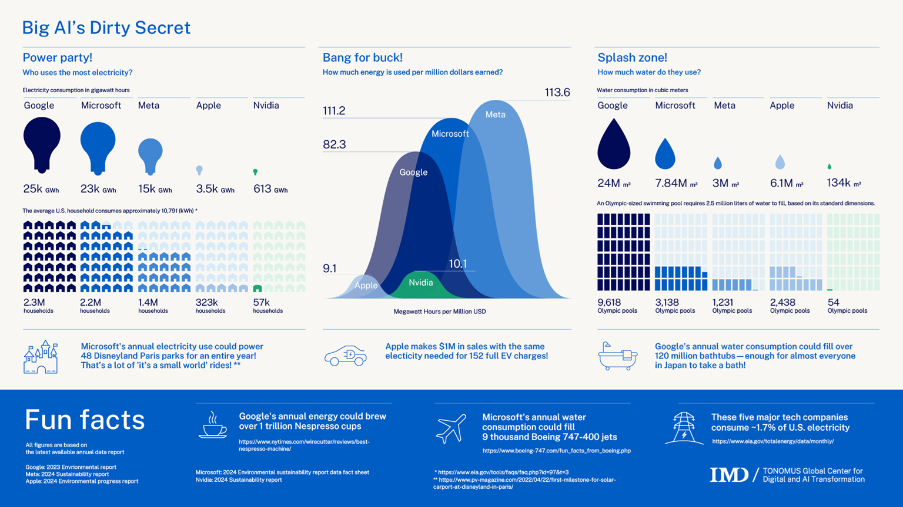

Generative Artificial Intelligence
This website is for educating people on how generative AI affects our environment and strains our already dwindling resources.
What is generative AI?
Generative AI is a form of artificial intelligence that identifies patterns in existing data online to create
"new" content or data.
 IBM notes: "Generative AI relies on sophisticated
machine learning models called deep learning models algorithms that simulate the learning and decision-making
processes of the human brain."
IBM notes: "Generative AI relies on sophisticated
machine learning models called deep learning models algorithms that simulate the learning and decision-making
processes of the human brain."
While it sounds complicated, what it comes down to is that generative AI needs information to work. It can't "make" information so the program pulls it from all over the internet to learn from and answer questions with. There are a few problems with this. First, Generative AI doesn't have enough environmental safeguards in place. Secondly, are the ethical concerns regarding where the information is pulled from. Below is a data sheet where you can learn more.
